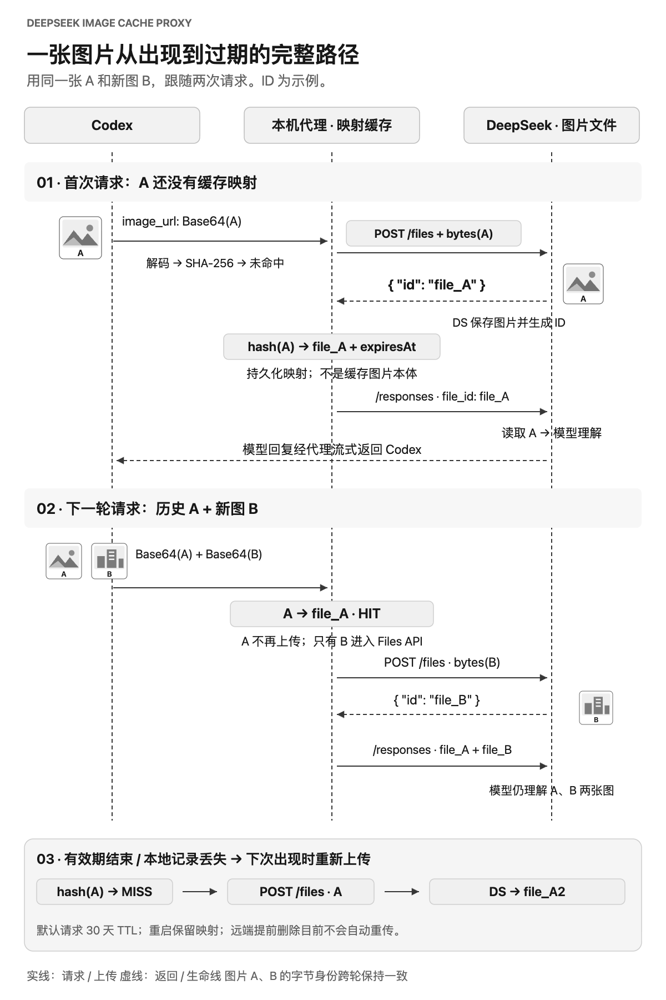

首次出现，上传原图
代理解码并计算图片哈希。没有有效映射时，调用 DeepSeek Files API 上传原始字节。
为 Codex × DeepSeek 而做
把已上传的历史图片换成 DeepSeek 文件引用。让长图片会话继续向前，少被 413 打断。
file_A复用file_BDS 返回file_Afile_BDeepSeek 读取已存图片，模型仍能理解 A 和 B。
比较改写前后的上游 Responses 请求体；不含单独的图片文件上传。
01 / 原理
当前接入路径会再次发送历史 Base64 图片。代理补齐上传、记住 ID、下次复用这三个环节。
代理解码并计算图片哈希。没有有效映射时，调用 DeepSeek Files API 上传原始字节。
DeepSeek 保存图片并返回 id。代理在本机持久化“凭证指纹 + 图片哈希 → file_id”。
下一轮的 A 命中旧记录，只上传新 B。Responses 改用两个文件 ID，DeepSeek 依然读取完整图片。

“重复”指当前请求再次携带与历史上传字节完全相同的图片。重启保留映射；默认请求 30 天有效期，过期后在图片下次出现时重新上传。
打开完整大图 ↗02 / 下载
开源、无额外 npm 依赖。先准备 Node.js 22.15+ 和已配置 DeepSeek 的 Codex。
LaunchAgent · 统一控制命令
安装时启动本机代理、备份 Codex 配置并接入代理路由。登录后自动启动。
下载 macOS 版PowerShell · 计划任务脚本
下载正式 Windows ZIP，使用 pixelpass.cmd 完成安装、状态检查和恢复直连。计划任务在登录后启动。
下载 Windows 版两种下载都包含可阅读的安装脚本，需 Node.js 运行环境。安装后请保留解压目录。所有版本 ↗
解压下载的 TAR.GZ，将得到的 pixelpass 文件夹放到固定位置。在这个文件夹内打开终端。
sh ./install.sh脚本会备份配置、启动代理，并把当前 DeepSeek provider 的 base_url 指向本机。
完全退出并重新打开 Codex，然后新建或 fork 一个任务。检查代理和路由：
./pixelpass status./pixelpass off恢复 Codex 直连并关闭代理。再次启用用 ./pixelpass on，之后重开 Codex。将 ZIP 解压到固定目录，在解压后的项目文件夹打开 PowerShell。确认 node.exe 已在 PATH 中。
.\pixelpass.cmd on -ProviderId custom把 custom 换成 Codex config.toml 中 DeepSeek provider 的实际名称。脚本会注册计划任务、备份并修改该 provider 的地址。
完全退出并重新打开 Codex，再新建或 fork 任务。在项目目录检查代理和路由：
.\pixelpass.cmd status.\pixelpass.cmd off关闭代理并按安装记录恢复 Codex 配置，之后重开 Codex。stop 只停止服务，不恢复路由。适合能读取终端并执行命令的 AI。它会先检查系统、Node.js 和 Codex provider，得到确认后才修改配置。
不会要求你粘贴 API Key；安装失败时会停止并给出诊断与恢复方法。
它将本机发往 DeepSeek Responses 的 Base64 图片改成文件引用。图片字节、画质和消息位置保留；模型仍能读取图片，视觉 token 不会因此减少。Codex 到本机这一段仍可能携带完整 Base64。
重复指当前请求中的图片与历史上传图片的字节完全相同。SHA-256 仅用于本地查找；file_id 来自 DeepSeek /files 上传响应中的 id。重新压缩后，即使肉眼相似，也可能无法命中。
重启会保留本地映射。默认请求文件 30 天后过期，以 DeepSeek 返回的到期时间为准；到期后在图片再次出现时重新上传。可重试上传默认最多重试 3 次，最终失败终止该请求。远端文件被提前删除时，当前版本不会自动修复旧 ID，需要处理本地缓存。
两者使用同一 Node.js 代理核心。macOS 提供 LaunchAgent 和 pixelpass on/off/status，托管入口默认 1 GiB；Windows 使用 PowerShell、计划任务和 pixelpass.cmd 提供相同日常入口，入口默认 256 MiB。Windows 发布任务会在 windows-latest 上实际执行安装、健康检查、停止、启动和恢复直连。
不需要。网页只是项目介绍和下载入口。代理运行在本机，默认只监听 127.0.0.1，沿用 Codex 请求中的凭证。本地缓存保存凭证指纹、图片哈希、文件 ID 与有效期，不保存图片本体。
DEEPSEEK IMAGE CACHE PROXY